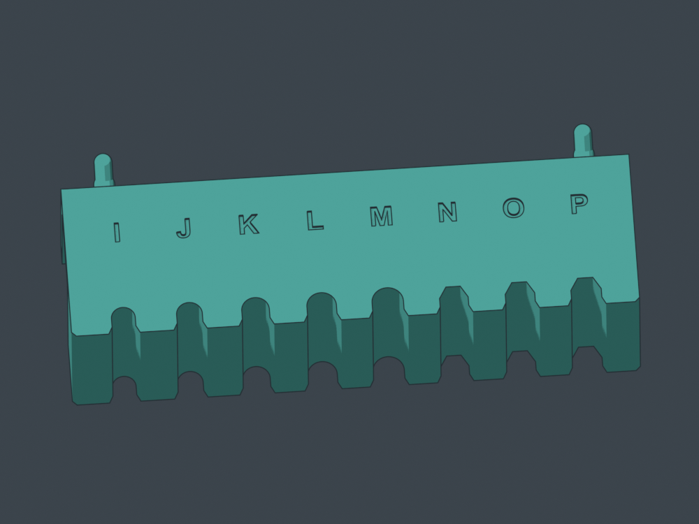
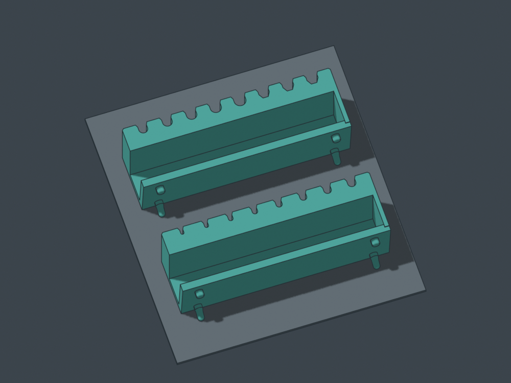
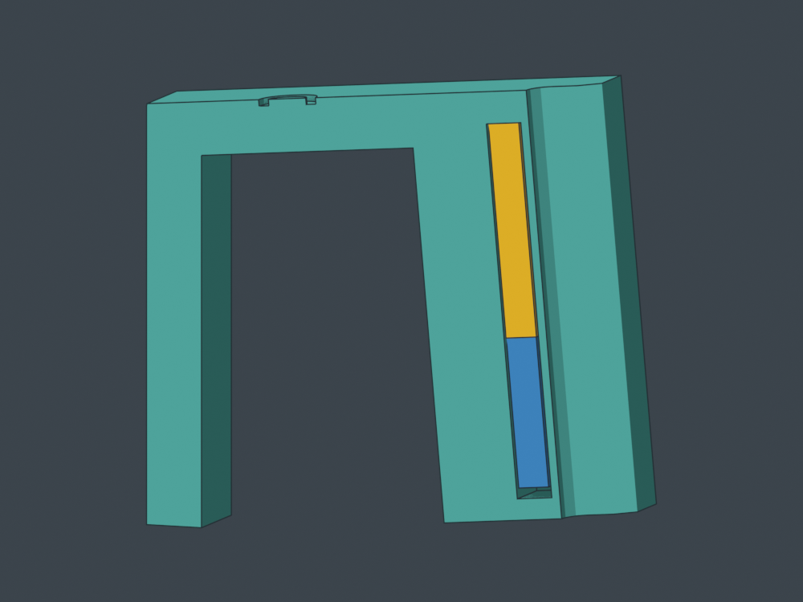

Find your letter.
Want to recover your magnets? Use the new open-channel v3 sampler: load after printing, hold with loose spacers and removable tape, then slide the magnets back out. The sealed v2 option remains below.
Revision 2: 14 mm plugs with 1 mm nominal clearance.
Sixteen magnetic shaft seats in two compact test strips. A–M step from 2 to 8 mm by half millimetres; N–P compare three quarter-inch hex clearances. Each letter is engraved in the actual part.
For your 20×10×3 mm magnets. Eight per strip, sixteen for both. Each magnet runs 20 mm along the shaft behind a shallow open cradle. Try one screwdriver at a time: the compact test spacing does not represent the final handle spacing.
Print the sampler
Prepared for P1S / 0.4 mm / Generic PLA / textured PEI. Print the sixteen plugs on plate 1 first, then either or both test strips. About 8 g / 28 minutes for the plugs and 101–104 g / about 4 hours for each strip, plus loading time.
At the pause
Each strip pauses with 38.0 mm printed, before the first cap layer at 38.2 mm. Load one magnet and immediately its long plastic plug, then repeat. The revised 14 mm plugs leave a nominal 1 mm recess. All plugs must sit below the rim before resuming. The completed print seals the magnets inside.
Both strips have a flat 5° bearing shelf, 150.4 mm modular width and the current tighter pegs. Bring the shaft in through the front; the root or collar rests on top.
 A–H: round shafts, 2 through 5.5 mm.
A–H: round shafts, 2 through 5.5 mm.
I–M: 6 through 8 mm. N–P: three quarter-inch hex clearances.
Both strips print flat top down. The supplied job adds local peg supports and brims. These CAD poses illustrate separate plates.
Real CAD section in installed orientation: gold is your 20×10×3 magnet; blue is the long preprinted plug. Turn upside down to load.Tell me which letters work
For example: “F — Craftsman #2 — easy return, little rocking.” Test seated stability, return and forward release. The openings include clearance; choose by actual feel.
| Letter | Nominal shaft | CAD opening |
|---|
| A | 2 mm round | 2.3 mm diameter |
| B | 2.5 mm round | 2.8 mm diameter |
| C | 3 mm round | 3.3 mm diameter |
| D | 3.5 mm round | 3.8 mm diameter |
| E | 4 mm round | 4.3 mm diameter |
| F | 4.5 mm round | 4.8 mm diameter |
| G | 5 mm round | 5.3 mm diameter |
| H | 5.5 mm round | 5.8 mm diameter |
| I | 6 mm round | 6.3 mm diameter |
| J | 6.5 mm round | 6.8 mm diameter |
| K | 7 mm round | 7.3 mm diameter |
| L | 7.5 mm round | 7.8 mm diameter |
| M | 8 mm round | 8.3 mm diameter |
| N | 6.35 mm / quarter-inch hex | 6.55 mm across flats |
| O | 6.35 mm / quarter-inch hex | 6.75 mm across flats |
| P | 6.35 mm / quarter-inch hex | 6.95 mm across flats |
Rotate the actual models
STEP and STL fallbacks
What has been checked
Valid solids, STEP round trips, nominal shaft withdrawal, pocket loading, native sliced plates, embedded-settings reslice, bed bounds and startup clearance. All sixteen pocket cores remain clear until the verified cap layer. Physical fit, magnetic feel and loading are awaiting your test. Desktop GUI opening checks were unavailable.
Four walls, five top/bottom layers, 15% gyroid, 0.20 mm layers; local bed supports and a 3 mm brim. The user's PLA preset is frozen at 220°C nozzle / 55°C bed. Orca's bed-temperature notice is retained in the kit. Full settings and actual-path previews are included.